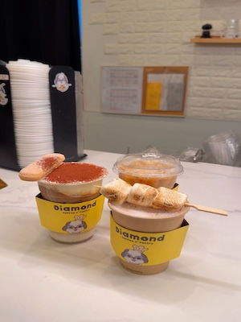

San Francisco Diaries 🍒

Coffee with friends
One of my favorite little rituals. Long conversations, warm drinks, and catching up on everything — it’s basically a reset button for my whole day.
San Francisco Diaries 🍒
One of my favorite little rituals. Long conversations, warm drinks, and catching up on everything — it’s basically a reset button for my whole day.
Daily moments 🎀
A calm start before the chaos. Even if I’m running late, I try to romanticize the small things — especially food.
Weekend energy 🛍️
A quick weekend “treat myself” moment. I love exploring little stores and finding cute things that feel like me.
Campus life 📩
Because my life is also… emails. This one was about campus stuff, and honestly it’s a huge part of my day-to-day routine.
Morning chaos ⏰
My alarms are honestly chaotic… but they work. This is the real start of my day — before coffee and before motivation kicks in.
Self-care 💇♀️
A mini self-care moment. It takes time, but it’s kind of relaxing — like a little routine I do just for me.
Late night grind 📚
The “I’m tired but I’m showing up” era. Some nights are just class + deadlines + powering through.
Matcha quest 🍵
I take matcha seriously. This was me searching for the perfect one in the city — it’s basically a hobby at this point.
Music mood 🎧
My background soundtrack for everything — studying, walking around SF, and pretending I’m in a movie.
SF weather 🌧️
SF weather is unpredictable, so I’m always checking. It’s either cute sunny vibes or windy survival mode.
Little adventures 📍
A small moment that feels like a mini adventure. I love exploring new places — even if it’s just a quick stop.